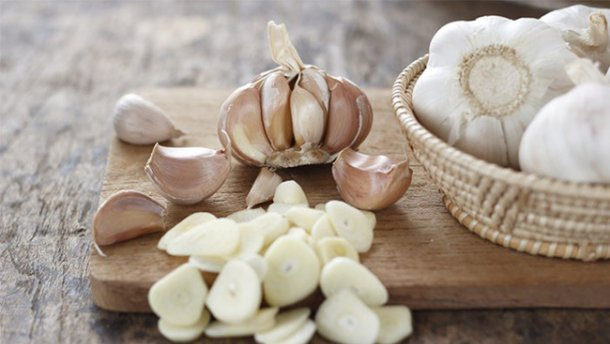

Почти все о чесноке


" Чеснок – целебная приправа "
Народные рецепты исцеления"
Уважаемый Читатель - после ознакомления с Книгой
рекомендую Вам заказать ее бумажное издание.
Лечение природными лекарствами - одна из животрепещущих тем, к которым обращаются многие авторы. Всеобщее внимание привлекает известное овощное и целебное растение чеснок, которое всегда под рукой. Чеснок стал излюбленным средством лечения и профилактики заболеваний, но в основном простудных - в народе прочно закрепилось мнение, что главное оружие чеснока - фитонциды. Известный фитотерапевт Нина Башкирцева рассказывает о доселе неизвестных свойствах чеснока положительно воздействовать буквально на все органы и системы.
В книге читатель найдет уникальные методики лечения с помощью чеснока, основанные на опыте многих поколений народных целителей и на современных научных исследованиях. Больше узнать об этом удивительном растении помогут его богатая история, описанная на страницах книги, и, конечно, полезные советы: как выращивать и хранить чеснок, готовить из него домашние средства лечения, кулинарные блюда и косметические маски.